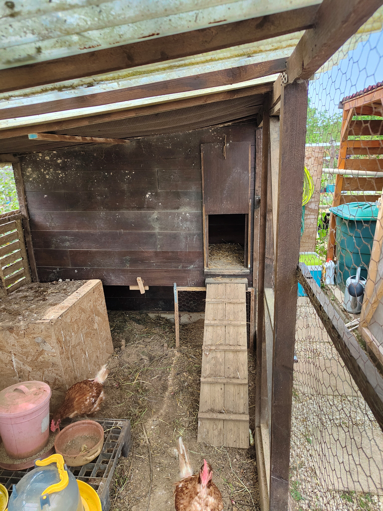
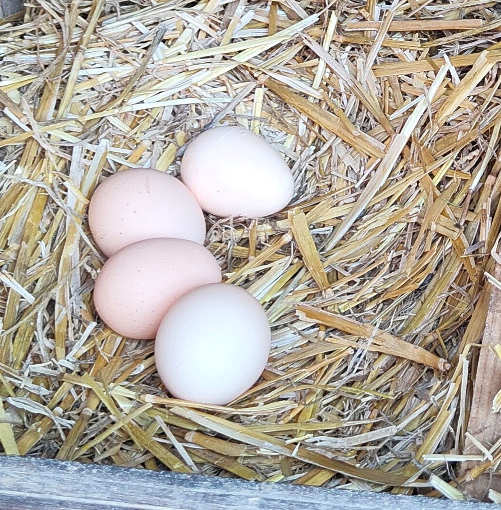

Sauver de l’élevages industriel
La poule « de réforme » provient d’élevage en batterie. Le plus souvent enfermé de la naissance à
la mort elle n’est destinée qu’a pondre. Puis envoyée à l’abattoir à 16 mois environ.

2 poulaillers en 2023
Mutualiser nos moyens:
Plusieurs jardiniers se partagent les 2 poulaillers.
Achats groupé de matériels et de nourriture.

Une précieuse contribution
Animal sympathique adoré des enfants et des plus vieux. Les poules dévorent limaces, larves et
escargots. Elle nous offre des œufs et un fumiers de très haute qualité pour le potager